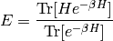
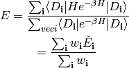
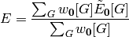
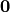

Introduction¶
The energy of a system can be evaluated using a standard statisical mechanics result:

We choose to work in a Slater Determinant space, which is, by construction, anti-symmetric. In this space the energy expression becomes:

A given term in the numerator is simply the differential of the corresponding term in the denominator. There is a cleaner and more efficient way of evaluating the numerator than differentiation, but we will first turn our attention to the denominator.
We can expand each term into a closed path of  steps through the discrete Slater Determinant space:
steps through the discrete Slater Determinant space:

where the  matrix consists of elements
matrix consists of elements
 .
.
Each path does not necessarily visit  determinants: “hopping”
terms are allowed. Due to the matrix being diagonally
dominant, paths containing small numbers of unique determinants will
tend to have a much greater contribution to the overall energy.
determinants: “hopping”
terms are allowed. Due to the matrix being diagonally
dominant, paths containing small numbers of unique determinants will
tend to have a much greater contribution to the overall energy.
The size of the Slater determinant space grows factorially with the number of electrons and virtual orbitals, making it impossible to sum together all the paths. Furthermore, the sign of a path is an incredibly poorly behaved quantity. It is possible to perform an analytical resummation of the paths into objects we term graphs, where each graph contains paths which only visit the vertices contained within the graph.
Note
To come: pictures of paths –> graph.
The expression for the energy now becomes a sum over Slater determinants and a sum graphs which originate from each Slater determinant:
![E = \frac{\sum_{\veci} \sum_G w_{\veci}[G] \tilde{E}_{\veci}[G]}{\sum_{\veci} \sum_G w_{\veci}[G]}](../_images/math/633fa9c51cdac63037206f4a3d9bbe83db5c5438.png)
Furthermore, the graphs have a much better sign behaviour: there are many graphs with a definite-positive weight, at least for graphs with less than 5 vertices, which makes a Monte Carlo approach feasible.
The resummation of paths into graphs still leaves a sum that is far too large to be completely evaluated. There are various approximations we can apply.
Use a single reference reference approach, i.e. approximate the energy with:

where  refers to the reference (i.e. Hartree–Fock) determinant.
This sum, in general, still contains too many terms (and grows too rapidly with system size) to be of much use.
Truncate the sum at a certain graph size (e.g. restrict it to two or three vertices). This approach is referred to as a VERTEX SUM approach.
Find a large graph that is a good approximation to the ground state and is easy to evaluate. Our current model is the single and double excitation star, which contains all single and double excitations connected to the reference determinant but ignores any connections between the excited determinants. In other words, it couples all the single and double excitations together, but only through the reference determinant. This method is referred to as a VERTEX STAR approach. The star contains all graphs in the sum truncated at the two vertex level and much more but at no additional costly integrals to evaluate. This makes it a very attractive approach.
Note
To come: the propogation operator.